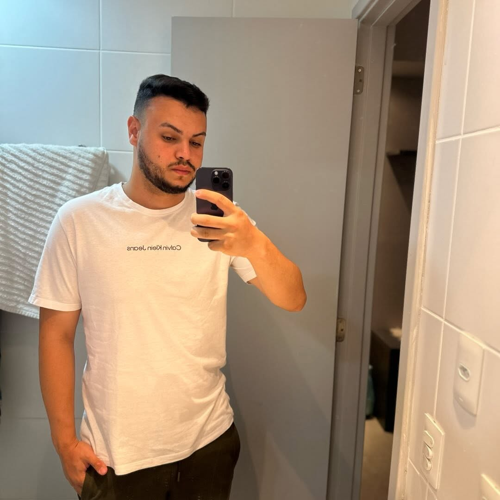

Site de Barbearia
Projeto de site para barbearia, pensado para apresentar o espaço e seus serviços de um jeito direto e convidativo. Um exercício de construção de páginas e organização visual para um negócio local.
Ver no GitHubOLÁ, EU SOU
Desenvolvedor front-end apaixonado por transformar ideias em experiências digitais.
Conheça meus projetos
UM POUCO SOBRE MIM
Meu nome é Wigner Cordeiro. Sou formado em Análise e Desenvolvimento de Sistemas e desenvolvedor front-end, com foco em JavaScript e React. Gosto de criar interfaces claras, funcionais e acessíveis. Estou em busca da minha primeira oportunidade na área para continuar aprendendo e contribuir com projetos reais.
O QUE TENHO FEITO
Projeto de site para barbearia, pensado para apresentar o espaço e seus serviços de um jeito direto e convidativo. Um exercício de construção de páginas e organização visual para um negócio local.
Ver no GitHubEste portfólio apresenta um pouco sobre mim, minhas habilidades e projetos. Foi criado para reunir minhas informações profissionais e facilitar o contato por meio das minhas redes.
Ver no GitHubVAMOS CONVERSAR?
Estou aberto a conexões, oportunidades e boas conversas sobre tecnologia.
 GitHub
GitHub LinkedIn
LinkedIn Instagram
Instagram Facebook
Facebook